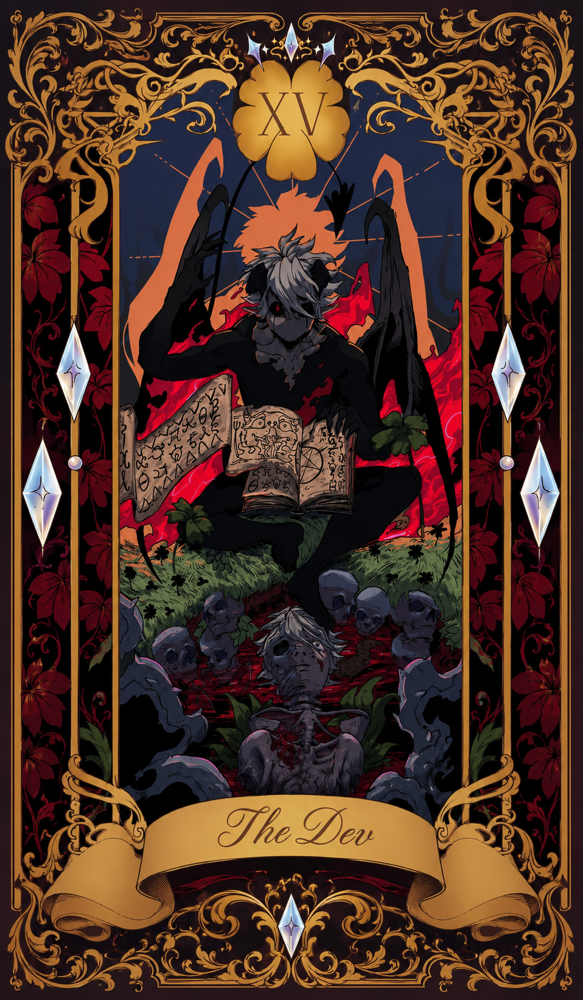
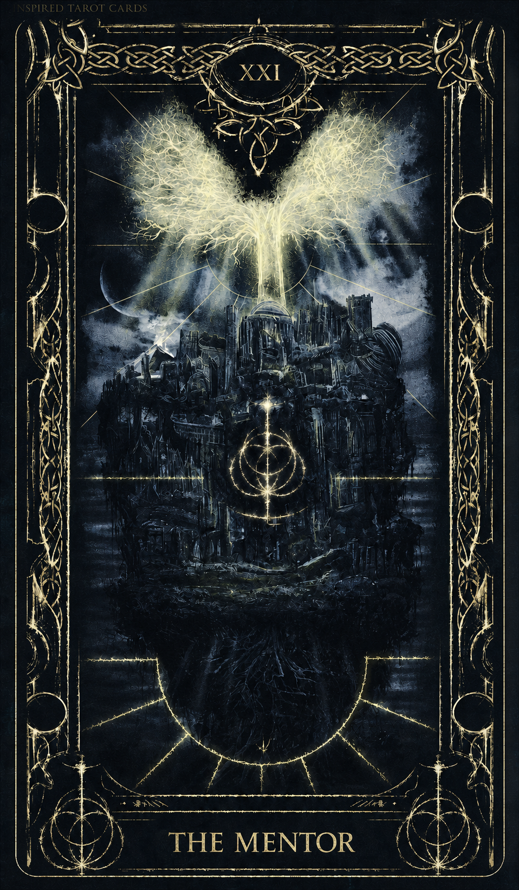

Os Arquitetos do Sistema
Conheça os arquitetos do Rota Segura — um sistema nascido da insegurança real de responsáveis e da necessidade urgente de saber onde cada criança está, a cada momento da rota.

Usuário de Linux, artesão de código e arquiteto principal do Rota Segura. Responsável por toda a estrutura da plataforma, do banco de dados ao pixel final de cada interface.

Professor de robótica, usuário de Mac e a bússola pedagógica do projeto. Traz a visão educacional que transforma tecnologia em ferramenta real para responsáveis e alunos.
A Origem do Rota Segura
A quest que deu vida ao sistema
O problema que não podia ser ignorado
Incidentes logísticos reais com o transporte escolar de Guaíra expuseram uma ferida grave: responsáveis sem nenhuma visibilidade sobre onde seus filhos estavam. Crianças mais novas pegando ônibus sozinhas, sem que ninguém soubesse se chegaram — ou quando chegariam.
A insegurança que virou missão
A ansiedade dos responsáveis diante do desconhecido foi o combustível. Se tecnologia existe para resolver problemas reais, o problema mais real possível é a segurança de uma criança. O Rota Segura nasceu dessa convicção — transformar angústia em tranquilidade, em tempo real.
O grimório foi conjurado
Com Supabase como backend, Leaflet para mapas ao vivo e GPS transmitido diretamente pelo celular do motorista — sem app, sem hardware extra — a plataforma foi erguida do zero. Um sistema acessível de qualquer dispositivo, por qualquer responsável, em qualquer lugar.
A guilda que cresce
Painel administrativo completo, portal do aluno, rastreamento em tempo real e alertas — o sistema evolui com cada commit. A missão não termina: enquanto houver uma criança no ônibus, o Rota Segura estará de olho.